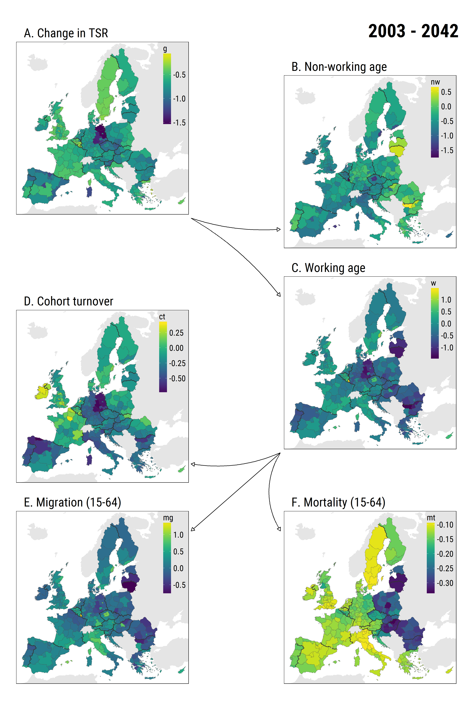
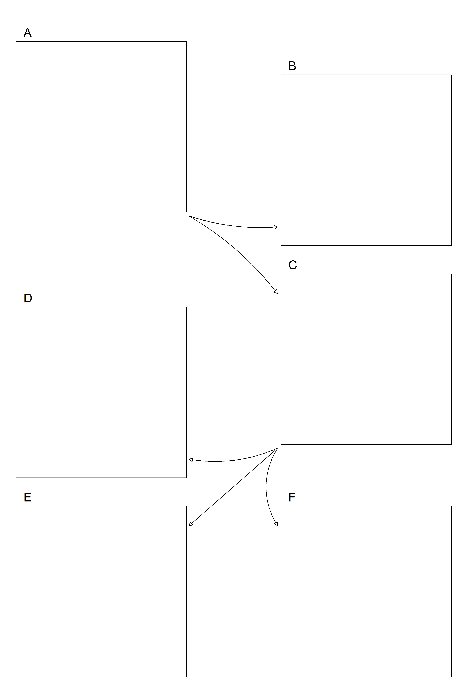

align_six_plots <- function(list.plots,
family = "",
labels=LETTERS[1:6],
labels.size=8){
require(tidyverse)
require(gridExtra)
gg <- ggplot()+
coord_equal(xlim = c(0, 21), ylim = c(0, 30), expand = c(0,0))+
annotation_custom(ggplotGrob(list.plots[[1]]),
xmin = 0.5, xmax = 8.5, ymin = 21, ymax = 29)+
annotation_custom(ggplotGrob(list.plots[[2]]),
xmin = 12.5, xmax = 20.5, ymin = 19.5, ymax = 27.5)+
annotation_custom(ggplotGrob(list.plots[[3]]),
xmin = 12.5,xmax = 20.5,ymin = 10.5,ymax = 18.5)+
annotation_custom(ggplotGrob(list.plots[[4]]),
xmin = 0.5, xmax = 8.5, ymin = 9,ymax = 17)+
annotation_custom(ggplotGrob(list.plots[[5]]),
xmin = 0.5, xmax = 8.5, ymin = 0, ymax = 8)+
annotation_custom(ggplotGrob(list.plots[[6]]),
xmin = 12.5,xmax = 20.5, ymin = 0, ymax = 8)+
labs(x = NULL, y = NULL)+
theme_void()
# DF with the coordinates of the 5 arrows
df.arrows <- data.frame(id=1:5,
x=c(8.5,8.5,12.5,12.5,12.5),
y=c(21,21,10.5,10.5,10.5),
xend=c(12.5,12.5,8.5,8.5,12.5),
yend=c(20.5,17.5,10,7,7))
# add arrows
gg <- gg +
geom_curve(data = df.arrows %>% filter(id==1),
aes(x=x,y=y,xend=xend,yend=yend),
curvature = 0.1,
arrow = arrow(type="closed",length = unit(0.25,"cm"))) +
geom_curve(data = df.arrows %>% filter(id==2),
aes(x=x,y=y,xend=xend,yend=yend),
curvature = -0.1,
arrow = arrow(type="closed",length = unit(0.25,"cm"))) +
geom_curve(data = df.arrows %>% filter(id==3),
aes(x=x,y=y,xend=xend,yend=yend),
curvature = -0.15,
arrow = arrow(type="closed",length = unit(0.25,"cm"))) +
geom_curve(data = df.arrows %>% filter(id==4),
aes(x=x,y=y,xend=xend,yend=yend),
curvature = 0,
arrow = arrow(type="closed",length = unit(0.25,"cm"))) +
geom_curve(data = df.arrows %>% filter(id==5),
aes(x=x,y=y,xend=xend,yend=yend),
curvature = 0.3,
arrow = arrow(type="closed",length = unit(0.25,"cm")))
# add labes
gg <- gg + annotate('text',label = labels,
x=c(.5,12.5,12.5,.5,.5,12.5)+.5,
y=c(29,27.5,18.5,17,8,8)+.1,
size=labels.size,hjust=0, vjust=0, family = family)
return(gg)
}Arranging subplots with ggplot2
r
ggplot2
Ilya Kashnitsky ![]()
For my recently published paper, I produced not-so-standard figures that show the two step decomposition used in the analysis. Have a look:
Figure 3 from my paper (PDF)
Actually, ggplot2 is a very powerful and flexible tool that allows to draw figures with quite a complex layout. Today I want to show the code that aligns six square plots (actually, maps) just as in the figure above. And it’s all about the handy function ggplot2::annotation_custom(). Since I used the layout more than once, I wrapped the code that produced it into a function that takes a list of 6 square plots as an input and yields the arranged figure with arrows as an output. Here is the commented code of the function.
Let’s check, if the function works. For that I create just a blank plot, clone it six times, store the six plots in a list, and finally feed it to the function.
library(tidyverse)
library(ggthemes)
# create a simple blank square plot
p <- ggplot()+
expand_limits(x = c(0,1), y = c(0,1))+
theme_map()+
theme(panel.border = element_rect(color = "black", size = 0.5, fill = NA),
aspect.ratio = 1)
# clone this plot six times and store as a list of six
plots <- mget(rep("p", 6))
# use the function on the list
six <- align_six_plots(plots)
# save the output
ggsave("six_square_plots_aligned.png", six, width=12, height=18)
Just what we wanted to get.